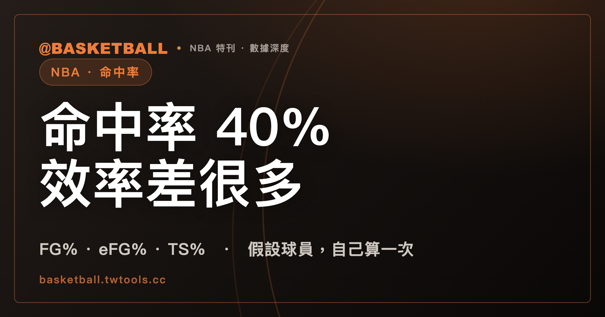

同樣是 40% 命中率，得分效率為什麼可以差很多？從 FG% 讀到 TS%
兩名球員的投籃命中率（FG%）相同，得分效率仍可能差很多，因為 FG% 不區分兩分與三分的分值，也不納入罰球。有效命中率（eFG%）調整三分的價值，真實命中率（TS%）再把罰球放進公式，兩者都可用來比較得分效率。

新手村｜數據入門・命中率與真實命中率
看籃球數據時，命中率是數據表上排得很前面的欄位之一。兩個人都是 40%，很容易以為他們投得一樣好。這篇文章要拆開這個直覺：命中率相同，得分效率仍可能差很多。讀完之後，你可以拿一位球員的出手數、命中數、三分命中數和罰球出手數，自己算出 FG%、eFG% 與 TS% 三個數字，並且說得出它們各自多算了什麼。
假設兩人都是 20 投 8 中，命中率同為 40%，得分卻差了 4 分
先看一個假設的例子。甲和乙都出手 20 次、進 8 球，兩人不是真實球員，數字是為了說明而編的。差別在於進球的種類：
| 假設球員 | 出手 | 命中 | 其中三分命中 | 得分 | FG% |
|---|---|---|---|---|---|
| 甲 | 20 | 8 | 0 | 16 | 40% |
| 乙 | 20 | 8 | 4 | 20 | 40% |
甲的 8 球全是兩分球，8 × 2 = 16 分。乙的 8 球裡有 4 顆三分球、4 顆兩分球，4 × 3 + 4 × 2 = 20 分。兩人的分值依 NBA 2025-26 規則書（Rule No. 5, Section I）：三分線外的進球算 3 分，線上或線內的進球算 2 分。
兩人的命中率一樣，得分差了 4 分。差距從哪裡來？乙有 4 球值 3 分，而命中率只數「進了幾球」，不管那一球值幾分。
FG% 已經把三分球算進去了，只是每一球都當成同一種進球
有一個容易踩的坑：以為 FG% 不計三分球。不是這樣。
NBA 官方統計詞彙表把投籃出手數（FGA）寫成「包含兩分球與三分球出手」，把 FG% 寫成 FGM 除以 FGA，也就是球員投籃出手中命中的比例。三分球的出手與命中，本來就在分子和分母裡。
問題在於權重。一顆三分球進了，分子只加 1；一顆兩分球進了，分子也只加 1。三分線外的進球算 3 分、線上或線內的進球算 2 分（NBA 2025-26 規則書，Rule No. 5, Section I），但 FG% 的公式看不出這 1 分的差別。
罰球是另一個缺口。罰球命中算 1 分（NBA 2025-26 規則書，Rule No. 5, Section I），但罰球有自己的出手數（FTA）與命中數（FTM），不在 FGA 裡。所以 FG% 有兩處沒有反映得分：三分球多出來的那 1 分，以及罰球得到的分數。
eFG% 幫每一顆三分球多算 0.5 顆進球
有效命中率（Effective Field Goal Percentage，eFG%）處理的是第一個缺口。NBA 官方統計詞彙表的說明是：調整命中率，因為進一顆三分球的價值是進一顆兩分球的 1.5 倍。公式是：
eFG% = (FGM + 0.5 × 3PM) ÷ FGA
其中 3PM 是三分球命中數。意思很直接：每一顆三分球命中，多加 0.5 顆進球，讓它在分子裡等於 1.5 顆兩分球。
1.5 這個倍數，就是 3 分除以 2 分（NBA 2025-26 規則書，Rule No. 5, Section I）。多加的 0.5，是三分球比兩分球多出來的那一半。你也可以這樣想：把每顆三分球換算成 1.5 顆兩分球，再除以出手數，得到的就是 eFG%。
拿乙來算：(8 + 0.5 × 4) ÷ 20 = 10 ÷ 20 = 50%。甲沒有三分球命中，所以是 8 ÷ 20 = 40%。FG% 兩人相同，eFG% 就把 4 分的差距顯示出來了。
eFG% 比 FG% 高出的部分，剛好是三分命中數除以出手數的一半
eFG% 的公式可以拆成兩塊：FGM ÷ FGA 是 FG%，0.5 × 3PM ÷ FGA 是額外的一塊。代入可得：
eFG% − FG% = 0.5 × 3PM ÷ FGA
這給你一個讀數據表的方法。一位球員的 eFG% 和 FG% 相同，代表他沒有三分命中。兩個數字差得越多，代表三分命中佔出手數的比例越高。乙的例子：0.5 × 4 ÷ 20 = 10%，正好是 50% 減 40%。
這個關係來自上面 NBA 統計詞彙表的兩條公式，不需要任何額外資料。
沒有罰球時，TS% 與 eFG% 算出同一個數字
真實命中率（True Shooting Percentage，TS%）處理第二個缺口。NBA 官方統計詞彙表說明，TS% 把三分球與罰球的價值一併放進兩分球的傳統命中率。公式是：
TS% = PTS ÷ [2 × (FGA + 0.44 × FTA)]
PTS 是總得分，FTA 是罰球出手數。分母的 2 × FGA 是「每次出手都拿兩分」的分數。罰球出手要另外算：每一次罰球出手，分母就多算 0.44 次投籃出手。NBA 統計詞彙表只列出公式，沒有說明 0.44 從哪裡來，所以這篇文章也不解釋它，只把它當成公式裡的係數使用。
如果沒有罰球，TS% 會和 eFG% 一樣。理由是：在 NBA 2025-26 的分值下，一顆三分球是 3 分，也就是 2 分再加 1 分，所以沒有罰球時 PTS = 2 × FGM + 3PM。代入 TS% 的公式：
PTS ÷ (2 × FGA) = (2 × FGM + 3PM) ÷ (2 × FGA) = (FGM + 0.5 × 3PM) ÷ FGA
右邊就是 eFG%。乙沒有罰球，TS% 是 20 ÷ (2 × 20) = 50%，與 eFG% 相同。
罰球一加進來，兩個數字就分開了。再假設一位球員丙：投籃跟乙一模一樣（20 投 8 中，其中 4 顆三分），另外罰球 10 次進 8 次。他的得分是 20 + 8 = 28 分：
| 假設球員 | 投籃 | 罰球 | 得分 | FG% | eFG% | TS% |
|---|---|---|---|---|---|---|
| 甲 | 20 投 8 中，0 顆三分 | 0 | 16 | 40% | 40% | 40% |
| 乙 | 20 投 8 中，4 顆三分 | 0 | 20 | 40% | 50% | 50% |
| 丙 | 20 投 8 中，4 顆三分 | 10 罰 8 中 | 28 | 40% | 50% | 約 57.4% |
丙的 TS% 算法是 28 ÷ [2 × (20 + 0.44 × 10)] = 28 ÷ 48.8，約 57.4%。三個人的 FG% 都是 40%，但 eFG% 分成 40% 與 50%，TS% 分成 40%、50%、57.4%。乙與丙的 eFG% 相同，是因為 eFG% 不看罰球；TS% 才把丙多拿的 8 分算進去。
自己算一次：假設丁 25 投 10 中，其中 5 顆三分，另外罰球 6 次進 5 次
拿一組新的假設數字，把三個公式都走一遍。丁：投籃 25 次、進 10 球，其中 5 顆是三分球；另外罰球 6 次、進 5 次。得分依 NBA 2025-26 規則書的分值計算。
- 得分：5 顆三分 = 15 分，另外 5 顆兩分球 = 10 分，罰球 5 分，合計 30 分。
- FG% = 10 ÷ 25 = 40%。
- eFG% = (10 + 0.5 × 5) ÷ 25 = 12.5 ÷ 25 = 50%。
- TS% = 30 ÷ [2 × (25 + 0.44 × 6)] = 30 ÷ 55.28，約 54.3%。
丁的 FG% 也是 40%。三個數字放在一起讀：40% 說明「投進的比例」，50% 說明三分球把進球價值拉高了，約 54.3% 說明再把 5 分罰球放進來之後的得分效率。
再多看一步：丁與乙的 eFG% 都是 50%，但丁的 TS% 約 54.3%，比乙的 50% 高。差距來自丁多拿的 5 分罰球；乙沒有罰球，兩個數字停在同一格。反過來，如果 TS% 比 eFG% 低，代表罰球出手每次換到的分數，低於它在分母裡多占的份量。這一點也能用同一條公式代入驗證，不需要其他資料。
練習時可以自己換數字：把丁的罰球改成 6 罰 2 中，得分變成 27，TS% 是 27 ÷ 55.28，約 48.8%，比 eFG% 的 50% 低。這是假設的算例，用意是讓你看到 TS% 兩個方向都可能移動。
之後看到任何一位球員的數據，都可以照這四步驟算。需要的欄位只有投籃出手、投籃命中、三分命中、罰球出手與總得分。
同樣拿 20 分，用 20 次出手與用 25 次出手，TS% 差了 10 個百分點
得分相同，也不代表效率相同。再假設一位球員戊：25 投 10 中，10 球全是兩分球，沒有罰球，得分 10 × 2 = 20 分（分值依 NBA 2025-26 規則書）。他的數字是：FG% = 10 ÷ 25 = 40%，eFG% = 10 ÷ 25 = 40%，TS% = 20 ÷ (2 × 25) = 40%。
前面的乙同樣拿 20 分，出手是 20 次，TS% 是 50%。兩人得分一樣，戊多用了 5 次出手，TS% 就低了 10 個百分點。TS% 的分母含出手數，得分相同時，出手越多，數字越低。
這也說明為什麼只看得分欄，看不出球員拿分的代價。得分欄告訴你拿了多少分，TS% 把出手數也放進分母，看的是得分相對於出手的效率；兩者要放在一起讀。
三個數字讀的是投籃與罰球，不含籃板、助攻與防守
三個公式的輸入，都是出手、命中、三分命中、罰球出手與得分。籃板、助攻、失誤與防守都不在公式裡。所以它們回答的問題很窄：這位球員的投籃與罰球，得分效率如何。
NBA 統計詞彙表把 eFG% 列為調整三分價值的命中率，把 TS% 列為再把罰球納入的命中率。看比賽數據表時，可以先找出手數與罰球數，再回頭套用上面的公式。想練習怎麼從數據表上讀這些欄位，可以搭配本站的看懂 box score；想看各隊目前的戰績，可以到 /standings/。
常見問題
FG% 是不是不算三分球？
不是。依 NBA 官方統計詞彙表，投籃出手數（FGA）包含兩分球與三分球出手，FG% 是命中數除以出手數，所以三分球有算進去。FG% 的限制是不按三分球的價值加權，也不納入罰球；罰球有自己的出手與命中欄位。
eFG% 和 TS% 有什麼差別？
依 NBA 官方統計詞彙表，eFG% 的公式是 (FGM + 0.5 × 3PM) ÷ FGA，只調整三分球的價值；TS% 的公式是 PTS ÷ [2 × (FGA + 0.44 × FTA)]，再把罰球納入。在 NBA 2025-26 的分值下，沒有罰球出手時，兩者會算出同一個數字。
TS% 公式裡的 0.44 是什麼？
它是 NBA 官方統計詞彙表公式裡的係數，每一次罰球出手在分母裡折算成 0.44 次投籃出手。詞彙表只給了公式，沒有說明係數的來源，所以這篇文章不解釋它為什麼是 0.44。其他網站或聯盟的公式寫法，請以該處公布的為準。
三分球、兩分球和罰球各算幾分？
依 NBA 2025-26 規則書（Rule No. 5, Section I）：三分線外的進球算 3 分，三分線上或線內的進球算 2 分，罰球命中算 1 分。這是 NBA 該賽季的規則；TPBL、PLG、HBL 與 FIBA 賽事請以各自公布的規則書為準。
資料來源
- NBA 官方統計詞彙表（NBA Stats Glossary）：FG%、FGA、eFG%、TS% 條目，頁面未標示版本，2026 年 9 月 25 日取得。nba.com/glossary 頁面上 eFG% 的公式少一個右括號，正文已補齊。
- NBA 2025-26 官方規則書（Official Playing Rules）：Rule No. 5, Section I b、c、f（三分線外進球 3 分、線上或線內 2 分、罰球 1 分）。ak-static.cms.nba.com/Official-2025-26-NBA-P…
- 甲、乙、丙、丁四位球員與全部數字為說明用的假設，不對應任何真實球員；「有效命中率」「真實命中率」為通用中文說法，NBA 官方用語是 Effective Field Goal Percentage 與 True Shooting Percentage。